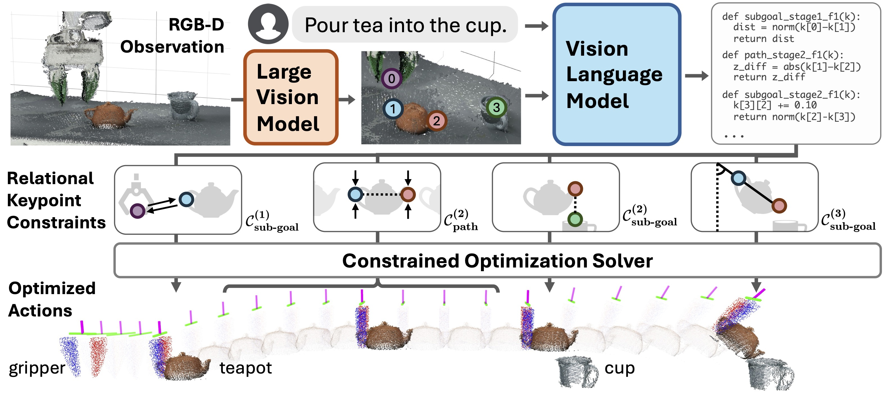

Abstract
Representing robotic manipulation tasks as constraints that associate
the robot and the environment is a promising way to encode desired robot behaviors. However, it remains unclear how to formulate the constraints such that
they are 1) versatile to diverse tasks, 2) free of manual labeling, and 3) optimizable by off-the-shelf solvers to produce robot actions in real-time. In this work, we
introduce Relational Keypoint Constraints (ReKep), a visually-grounded representation for constraints in robotic manipulation. Specifically, ReKep is expressed
as Python functions mapping a set of 3D keypoints in the environment to a numerical cost. We demonstrate that by representing a manipulation task as a sequence
of Relational Keypoint Constraints, we can employ a hierarchical optimization
procedure to solve for robot actions (represented by a sequence of end-effector
poses in SE(3)) with a perception-action loop at a real-time frequency. Furthermore, in order to circumvent the need for manual specification of ReKep for each
new task, we devise an automated procedure that leverages large vision models
and vision-language models to produce ReKep from free-form language instructions and RGB-D observation. We present system implementations on a mobile
single-arm platform and a stationary dual-arm platform that can perform a large
variety of manipulation tasks, featuring multi-stage, in-the-wild, bimanual, and
reactive behaviors, all without task-specific data or environment models.
Overview of ReKep

Given RGB-D observation and free-form language instruction, DINOv2
is used to propose keypoint candidates on fine-grained meaningful regions in the scene. The image overlaid
with keypoints and the instruction are fed into GPT-4o to generate a series of ReKep constraints as python
programs that specify desired relations between keypoints at different stages of the task and any
requirement on the transitioning behaviors. Finally, a constrained optimization solver is used to obtain a
dense sequence of end-effector actions in SE(3), subject to the generated constraints.
The entire pipeline does not involve any additional training or any task-specific data.
Closed-Loop Replanning across Multiple Stages
Since keypoints are tracked in real-time, the system can replan its actions in closed loop, both within stages and across stages.
Here, the operator randomly perturbs the objects and the robot, but the robot can quickly react to it.
Note that after the robot tilts the teapot, if at this moment the cup is moved away from the robot, it would restore the teapot to be upright and attempt the pouring action again.
Real-time solution is visualized on the right.
Bimanual Manipulation
Bimanual tasks investigated in the paper. Select a task to see its video and solution visualization.
In-The-Wild Manipulation
In-the-wild tasks investigated in the paper. Select a task to see its video and solution visualization.
Folding Clothes with Novel Strategies
The system can also generate novel strategies for the same task but under different scenarios.
Specifically, we investigate whether the same system can fold different types of clothing items.
Interestingly, we observe drastically different strategies across the clothing categories, many of which align with how humans might fold each garment.
Select a garment to see its folding strategy and its video.
The coloring of the keypoints indicates the folding order, where red keypoints are aligned first and the blue keypoints are aligned subsequently.
Acknowledgments
This work is partially supported by Stanford Institute for Human-Centered Artificial Intelligence, ONR MURI N00014-21-1-2801, and Schmidt Sciences. Ruohan Zhang is partially supported by Wu Tsai Human Performance Alliance Fellowship. The bimanual hardware is partially supported by Stanford TML. We would like to thank the anonymous reviewers, Albert Wu, Yifan Hou, Adrien Gaidon, Adam Harley, Christopher Agia, Edward Schmerling, Marco Pavone, Yunfan Jiang, Yixuan Wang, Sirui Chen, Chengshu Li, Josiah Wong, Wensi Ai, Weiyu Liu, Mengdi Xu, Yihe Tang, Chelsea Ye, Mijiu Mili, and the members of the Stanford Vision and Learning Lab for fruitful discussions, helps on experiments, and support.
BibTeX
@article{huang2024rekep,
title = {ReKep: Spatio-Temporal Reasoning of Relational Keypoint Constraints for Robotic Manipulation},
author = {Huang, Wenlong and Wang, Chen and Li, Yunzhu and Zhang, Ruohan and Fei-Fei, Li},
journal = {arXiv preprint arXiv:2409.01652},
year = {2024}
}